Exploradores
Exploran causa y efecto. Arman circuitos en frío con kits de electrónica, programan robots con bloques, modelan sus primeras piezas en 3D y entienden, jugando, cómo aprende una máquina. Todo con un docente al lado y sin cautín.
TecnoSanJuan, club de robótica de NEUROSTEAM LABS
Robótica, electrónica, diseño 3D e inteligencia artificial para niños y adolescentes desde los 7 años. La base para quien quiera seguir ingeniería mecatrónica, ingeniería de sistemas, ciencias de datos o inteligencia artificial.
Clases de profundización: martes y jueves, de 2:30 a 5:00 p. m. · Ciclos de ocho sesiones · Campus del Colegio Campestre San Juan de la Loma, Tuluá · Desde 2015
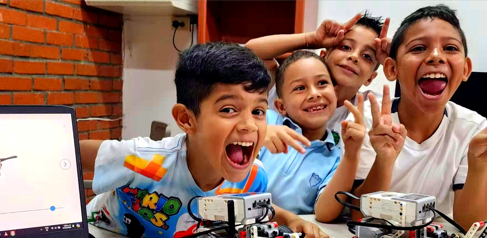
Qué es
El club nació en 2015 como el club de robótica del Colegio Campestre San Juan de la Loma. Se fue formalizando con los años y sigue creciendo bajo mi dirección.
Desde entonces han pasado por el taller cientos de niños y adolescentes de Tuluá. De aquí han salido drones, brazos robóticos manejados con joystick, un sistema de riego automatizado para permacultura, un detector de ondas cerebrales, máscaras impresas en 3D con luz LED y una mano robótica que interpreta la lengua de señas, con la que cuatro jóvenes investigadoras del club ganaron el Primer Lugar del Premio Nacional al Inventor Colombiano en 2019. En 2023 el equipo fue subcampeón nacional del Torneo SET Veintiuno Robótica, de Santillana. La historia completa está aquí.
No es un curso para entretener a los chicos con pantallas. Es un taller: hay impresoras 3D, microcontroladores, sensores, motores, estaciones de soldadura y, en cada ciclo, un reto que el grupo tiene que resolver. Las bases las ponemos los docentes; el proyecto lo definimos con ellos. La idea es simple: aprender a dirigir la tecnología, no solo a usarla.
Desde febrero de 2026 el club funciona bajo NEUROSTEAM LABS S.A.S., una empresa que creé para darle al programa autonomía y un plan de estudios formal, hoy en trámite de licencia ante la Secretaría de Educación de Tuluá. El taller sigue donde siempre ha estado: en el campus del colegio.
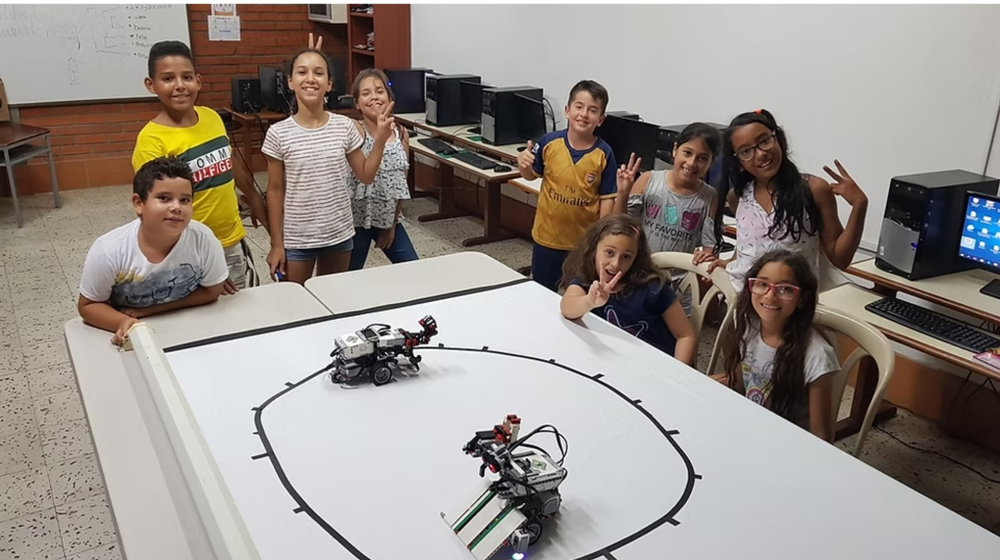
Para quién
Exploran causa y efecto. Arman circuitos en frío con kits de electrónica, programan robots con bloques, modelan sus primeras piezas en 3D y entienden, jugando, cómo aprende una máquina. Todo con un docente al lado y sin cautín.
Integran microcontroladores, sensores y motores. Diseñan piezas funcionales y las imprimen. Programan con la inteligencia artificial como asistente, dirigida a través del docente, leyendo y corrigiendo lo que propone. Sueldan sus propios componentes bajo el protocolo de taller asistido.
Para entrar hace falta estar matriculado en un colegio, la autorización del acudiente y una conversación corta con el chico para conocer qué le interesa. Para Desarrolladores, además, manejo básico del computador. No hace falta saber programar ni haber tocado un robot.
Cómo trabajamos
La varita amplifica lo que el mago puede hacer, pero no piensa: ejecuta. Cuando un estudiante le entrega a la inteligencia artificial la pregunta, el juicio y la verificación, deja de ser mago y se vuelve operario de la varita. Todo lo que hacemos en el club está diseñado para que eso no pase.
Cada ciclo arranca con un reto abierto: ¿cómo hacer que un vehículo esquive obstáculos?, ¿cómo enseñarle a una IA a distinguir alimentos saludables? Y termina con un prototipo que funciona, físico o digital. Las bases las dan los docentes; el camino lo construyen los chicos.
Ningún prototipo se da por terminado en la primera versión. Se construye, se prueba, falla, se mejora: al menos dos versiones por proyecto, como se trabaja en la industria.
Cada estudiante explica su trabajo ante sus compañeros: qué decidió, qué falló, qué aprendió. Hablar en público y defender una decisión técnica es parte del programa, no un extra.
Trabajamos con la lógica del movimiento FIRST: equipos que proponen, se retroalimentan y se miden en ferias internas y retos del club. El liderazgo, la comunicación y el manejo del tiempo se aprenden ahí, haciendo, y reciben retroalimentación explícita del docente.
Soy psicólogo, y el programa está diseñado a partir de cómo aprende el cerebro de un niño o un adolescente: bloques de atención de 20 a 25 minutos con cambio de actividad, repaso espaciado en vez de avance acelerado, y el error tratado como información, no como falla.
Lo que hacen los chicos
Nada de lo que verás en este sitio es de un banco de imágenes: son nuestros chicos y sus prototipos.

Calaveras impresas en 3D a la escala del rostro de cada estudiante, con mandíbula articulada y filamento fluorescente.
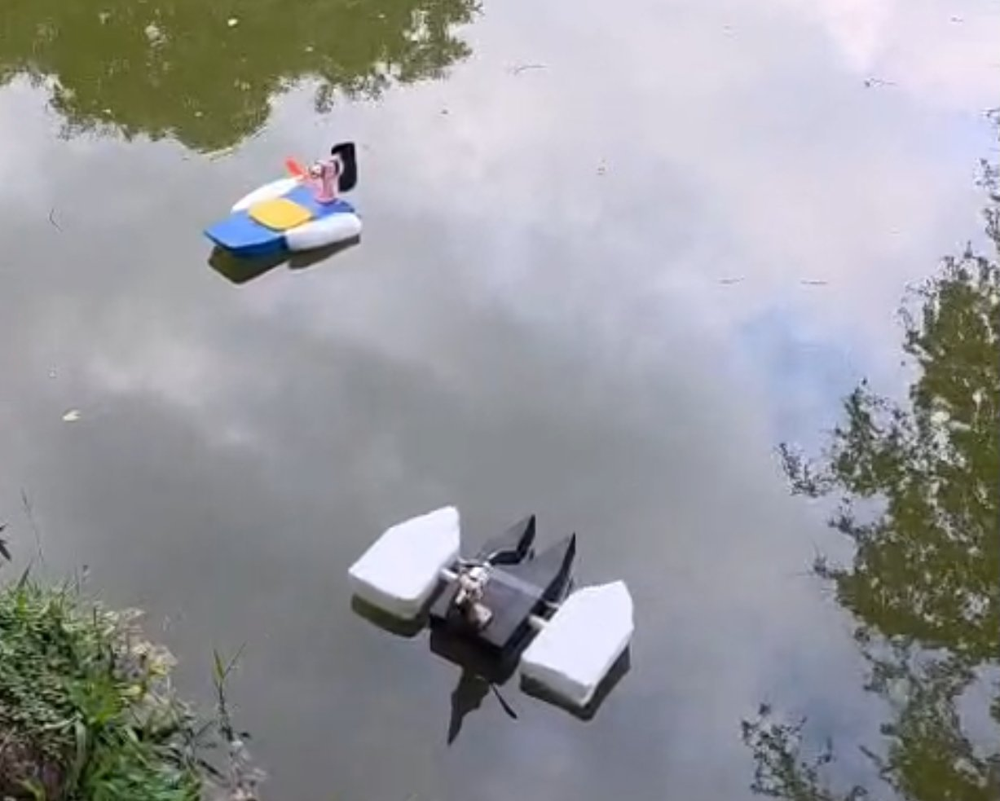
Cascos impresos en 3D, motor brushless, flotadores y pruebas en el agua.
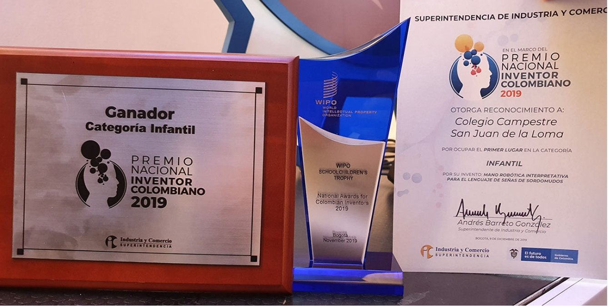
Primer Lugar, categoría infantil, de la SIC y la OMPI.
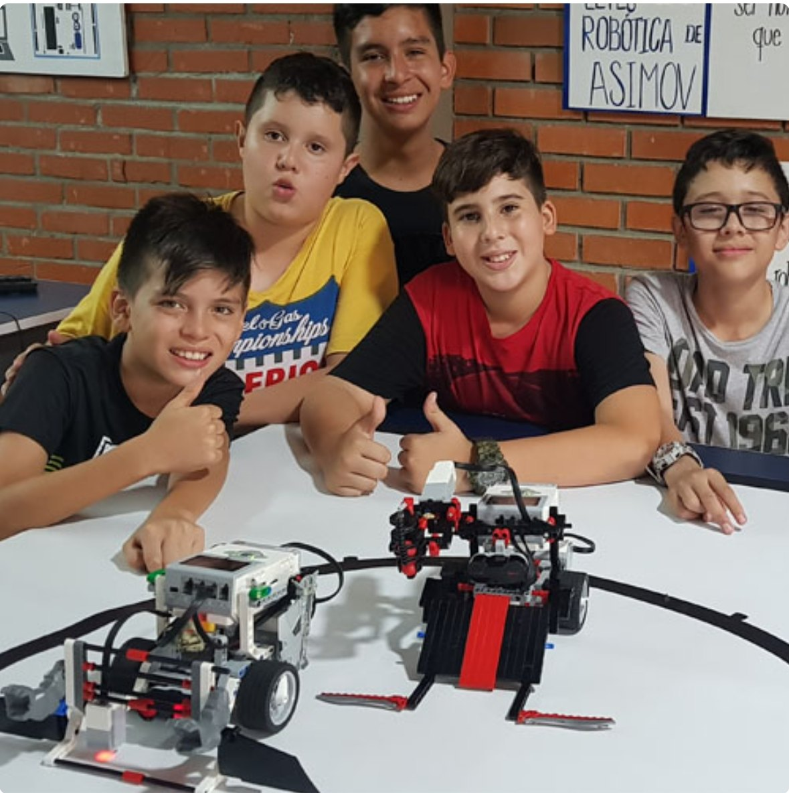
Dos robots programados para encontrar al rival y sacarlo del círculo.

El primer circuito que funciona: LED, protoboard y un programa propio.

Riego automatizado para un cultivo permacultural.

Un ecosistema simulado, con referente físico en la granja escolar.

Chasis impreso en 3D, cuña de acero y electrónica propia.
Memoria del club
De los Lego Mindstorms de 2015 a los robots de combate de 2026, pasando por un Premio Nacional al Inventor y un subcampeonato nacional. Las fotos son del taller, tomadas con el celular.
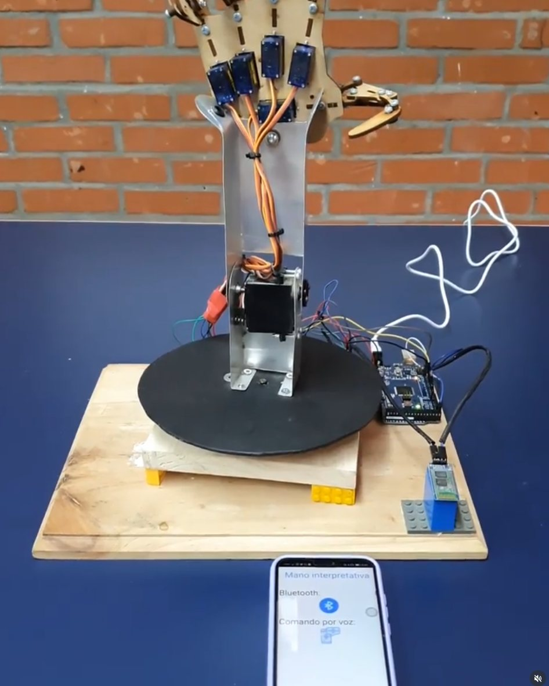
2019La mano robótica que ganó el Premio Nacional al Inventor.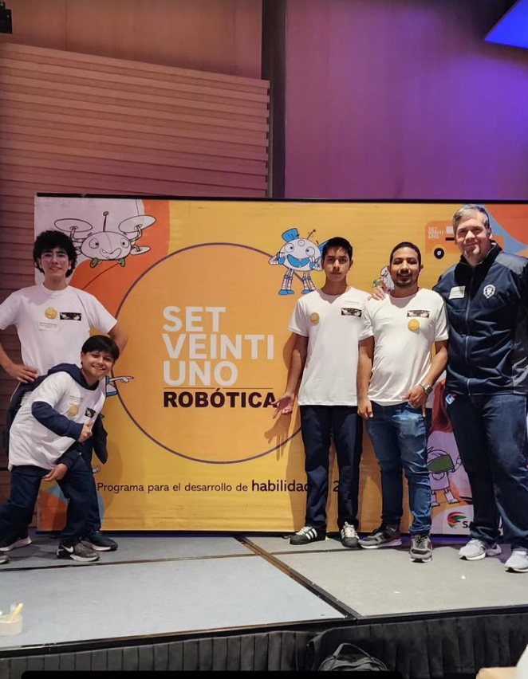
2023Subcampeones nacionales del Torneo SET Veintiuno, de Santillana.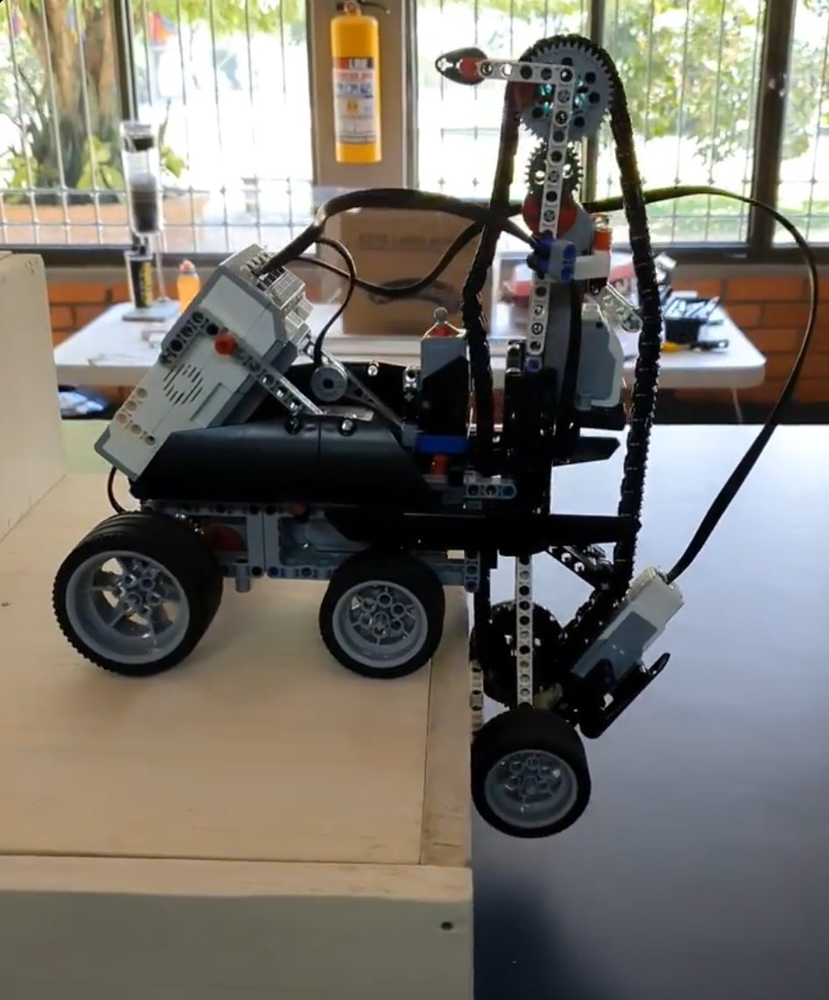
Los iniciosLego Mindstorms y los primeros mecanismos.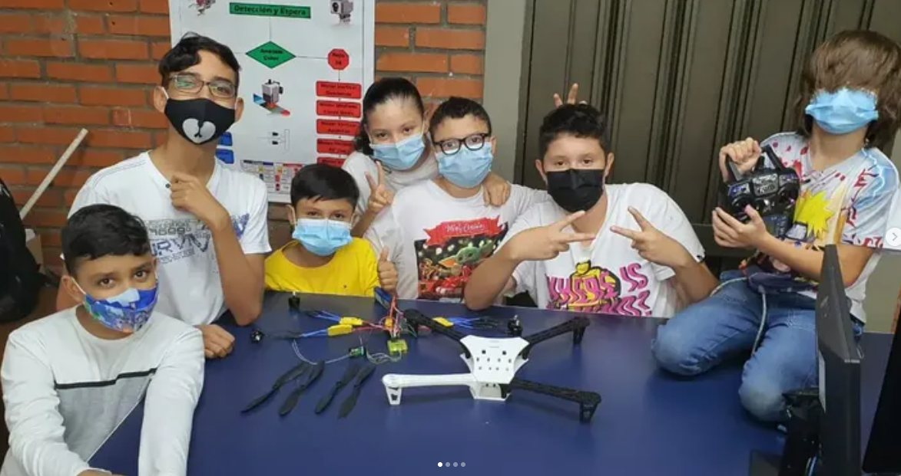
PandemiaLos drones: con tapabocas, pero sin parar.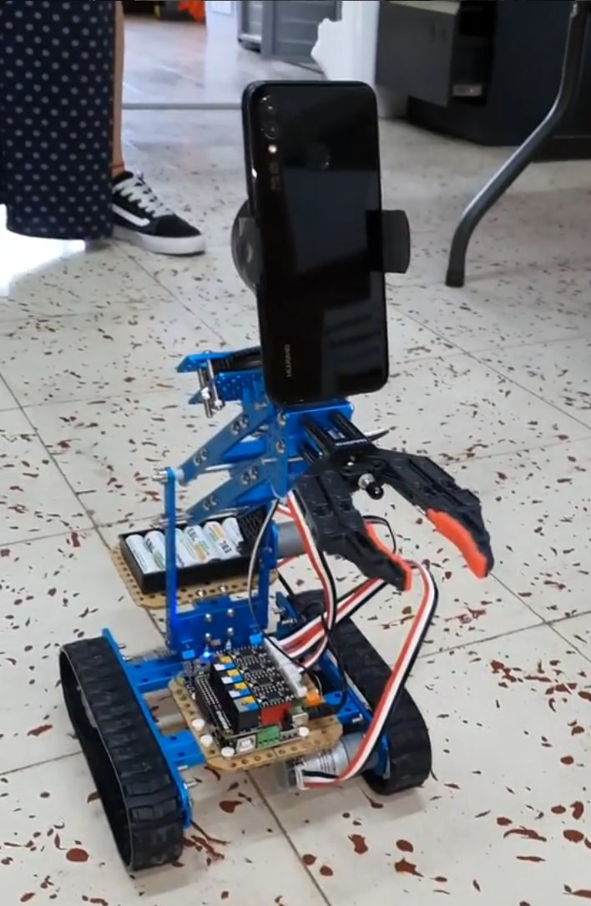
ExploradorOrugas, pinza y un celular como cámara, para después de un sismo.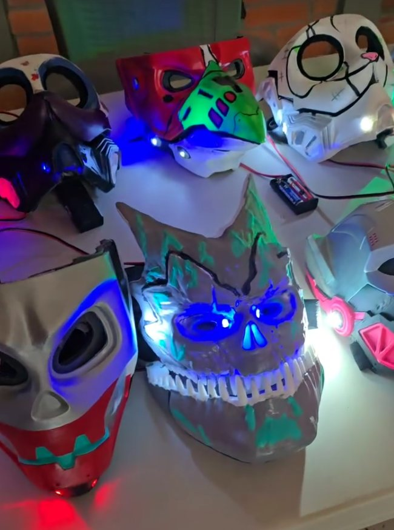
2024Halloween: la primera generación de máscaras con LED. 2022Campeones de la categoría avanzada en la Carrera Naval de la UCEVA.
2022Campeones de la categoría avanzada en la Carrera Naval de la UCEVA.
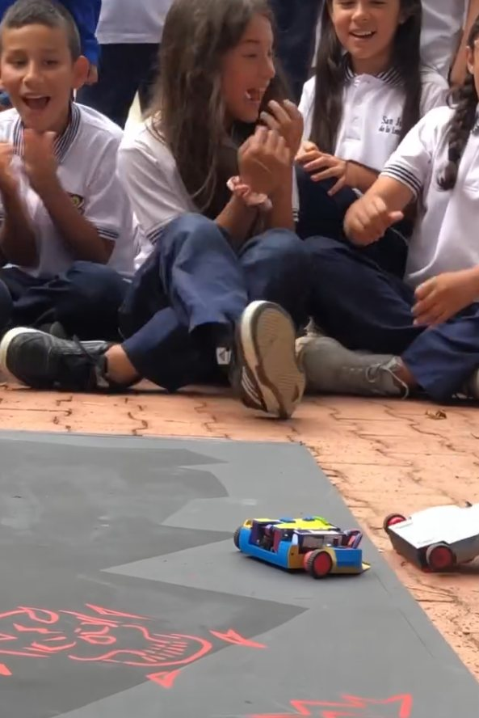
2026Robot Battle, con todo el curso de público.Desliza para ver más.
Retos del club
Un reto es un proyecto grande que atraviesa varios ciclos y en el que participan equipos de las dos modalidades. Los tres retos de 2026 se cerraron con éxito; la evidencia, en fotos y video, está en el Instagram del colegio. El Eco Challenge, que no alcanzamos a hacer en 2026, es el reto de 2027.
Lanchas de radiocontrol diseñadas y construidas por los chicos, con microcontroladores ESP32 y motores brushless. Los problemas fueron de física de verdad: hermeticidad, flotabilidad y propulsión en el agua. El club tiene historia en el agua: en 2022 fue campeón de la categoría avanzada en la IX Carrera Naval de la UCEVA.
Con licencias educativas, los chicos simularon ecosistemas: variables biológicas, ciclos de energía, sensores. No fue juego libre; fue un modelo del mundo, conectado con la granja escolar del colegio.
Dos robots, autónomos o radiocontrolados, intentando sacar al otro de la arena, como en el sumo japonés. Con reglamento y premiación.
Ingeniería ambiental y economía circular. El reto de 2027: montar y operar una línea de reciclaje real, botellas PET convertidas en filamento para nuestras impresoras 3D. Lo que se imprima en el club saldrá, en parte, de lo que el club recicle.
Horarios, lugar y precio
Las clases de profundización son los martes y jueves de 2:30 a 5:00 p. m., en el campus del Colegio Campestre San Juan de la Loma, Callejón Mateguadua, Calle 52 # 40-800, Tuluá.
Un ciclo son ocho sesiones, un mes aproximadamente, y cuesta $237.000. No se cobra IVA. En la semana de receso escolar no hay clases, y el ciclo se extiende hasta completar las ocho sesiones.
El programa completo son cinco módulos y 200 horas: alrededor de un año lectivo al ritmo de dos tardes por semana. Se puede entrar en cualquier ciclo.
Equipo
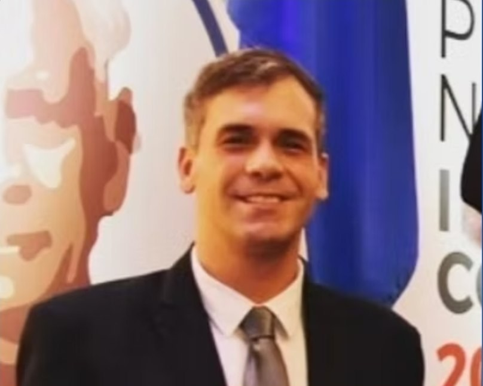
Fundador y director
Psicólogo de la Pontificia Universidad Javeriana de Cali, egresado con honores. Fundé el club en 2015 y lo dirijo desde entonces. Hago parte de la junta directiva del colegio y soy autor de Resonancia Semántica, un libro sobre pensar con la inteligencia artificial sin dejar de pensar por uno mismo. Perfil completo.
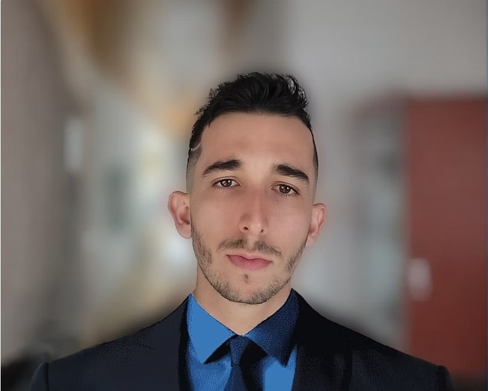
Diseño 3D y manufactura digital
Tecnólogo en animación 3D y estudiante de Ingeniería Multimedia. Artista 3D. Enseña modelado, laminado e impresión y está a cargo del módulo de Diseño 3D y Manufactura Digital.
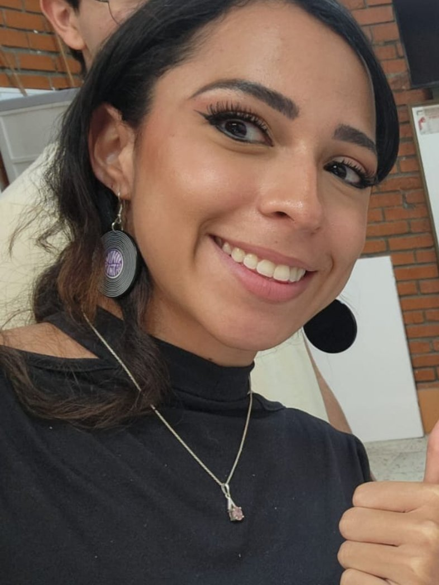
Docente · grupo junior
Ingeniera de sistemas de la Universidad del Valle y tecnóloga en electrónica industrial en formación. Diseña circuitos y configura sensores, motores y microcontroladores (Arduino UNO, Nano y ESP32); programa en C, C++, Java y Python. Primer puesto en la competencia de robótica de la XIX Jornada Regional de Electrónica con RobotGol, un robot para el que desarrolló el hardware y la aplicación de control remoto. Ya enseñaba robótica a niños antes de llegar al club; está a cargo del grupo junior.
Docente
Ingeniero de sistemas de la Universidad del Valle y docente del área de tecnología del Colegio Campestre San Juan de la Loma. Se entiende muy bien con los estudiantes: comunicación asertiva y buenas ideas para el taller.
Todos los docentes tienen la verificación de antecedentes al día (Procuraduría, Contraloría, Policía y el registro de inhabilidades de la Ley 1918 de 2018) y trabajan bajo nuestra política de protección a la infancia.
Inscripción y pago
Al WhatsApp del club, +57 323 651 4690, o al correo info@tecnosanjuan.club. Cuéntanos la edad del chico y qué le gusta.
Una conversación corta con el estudiante y su familia para conocer sus intereses, resolver dudas y definir la modalidad.
Son $237.000 por ocho sesiones, sin IVA. Puedes pagar por transferencia a la cuenta corriente de NEUROSTEAM LABS, con código QR, por Wompi, o con tarjeta de crédito a través de Mercado Pago en nuestra pasarela en línea, donde también queda tu cuenta de familia.
Preguntas frecuentes
Contacto
Callejón Mateguadua, Calle 52 # 40-800, Tuluá, Valle del Cauca, Colombia. Sitio del colegio: sanjuloma.edu.co. Instagram: @colegio.sanjuanloma, compartido con el colegio.